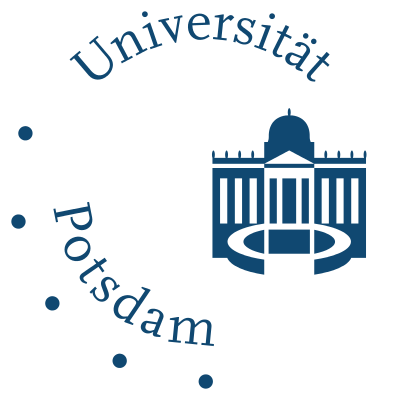

| |
1998-2002 | BSc in Computing Science, University of Aberdeen, UK (first class) |
| |
2002-2003 | MSc in Natural Computation, University of Birmingham, UK (with distinction) |
| |
2003-2007 | PhD in Computer Science, University of Birmingham, UK |
| 1998-2002 | Postdoc at HCI, University of Heidelberg, Germany | |
|  | 2002-2003 | Postdoc at Geophysics Institute, University of Potsdam, Germany |
Since 2014, I have been working as a researcher at the Heidelberg Institute of Theoretical Studies, Germany.